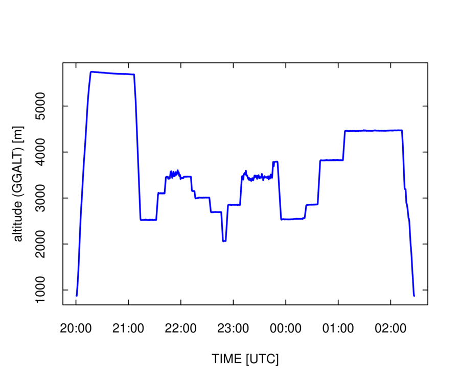
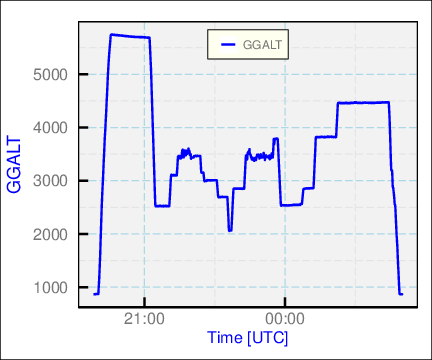

The function Ranadu::plotWAC() calls the standard R function “plot”
with a particular set of conventions. Some reasons you may want to
consider using it include the following:
- [time offset:] The convention in the NCAR/EOL/RAF netCDF files
is that the time variable represents the start of the interval over
which measurements are averaged, so a 1-Hz variable with a specified
time is actually an average where the mean time is 0.5 s later. Plots
generated by plotWAC() adjust for this offset. For this same reason,
you may want to use the routine Ranadu::lineWAC() to add lines to
the plot, instead of the standard “lines” routine provided by
R.
- [plot format:] The set of conventions regarding time labels, axis
formats, and legends may be preferable to those that are standard
with “plot()” and will save you from making those tailoring adjustments.
- [pipe_compatible:] The function plotWAC() can be used in a pipe
where the piped variable is a data.frame tailored to contain specified
variables to construct multiple-variable plots. A similar pipe to
“plot()” will produce a faceted plot of each variable vs. each
other variable, which may not be what you want.
Figure ![[*]](crossref.png) shows an example.
shows an example.
|
plotWAC(Data[, c('Time', 'GGALT')])
Figure:
Example of the same plot as the preceding figure but generated with Ranadu::plotWAC().

|
Another option is provided by Ranadu::ggplotWAC(), as shown in Fig. :
|
|
ggplotWAC(Data[, c('Time', 'GGALT')])
Figure:
Example of the same plot as the preceding figure but generated with Ranadu::ggplotWAC().

|
Additional examples showing the advantages of constructing plots with
pipes will be presented in later chapters of this document. For more
information on the use of these plotting routines, see “?Ranadu::plotWAC”
and “?Ranadu::ggplotWAC”.
|